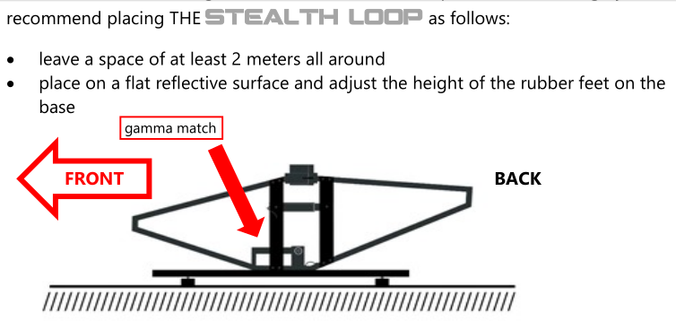
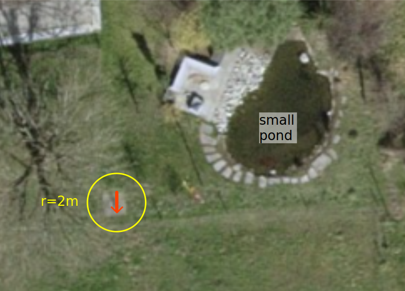
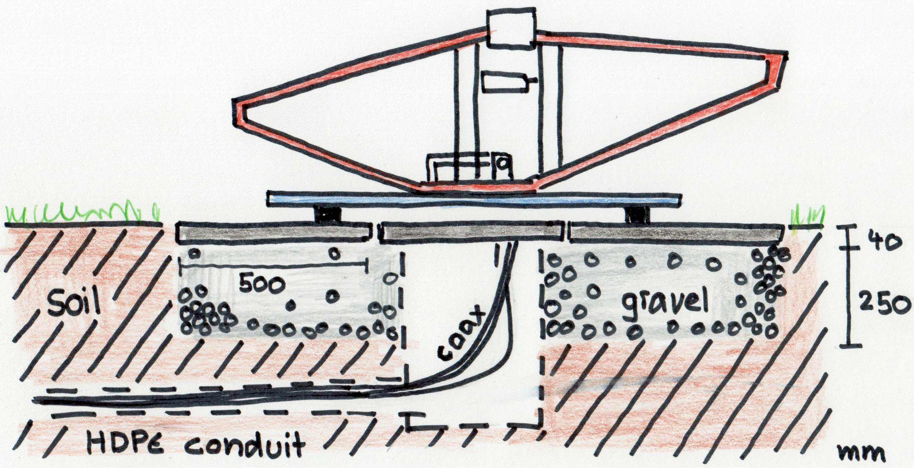
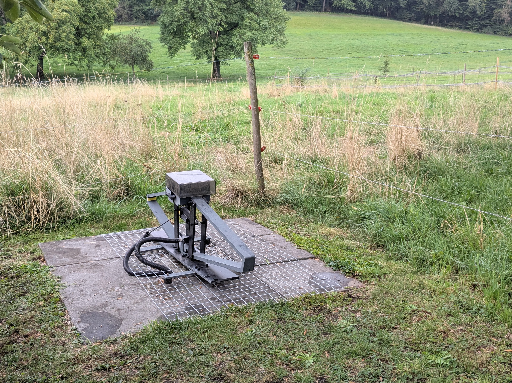
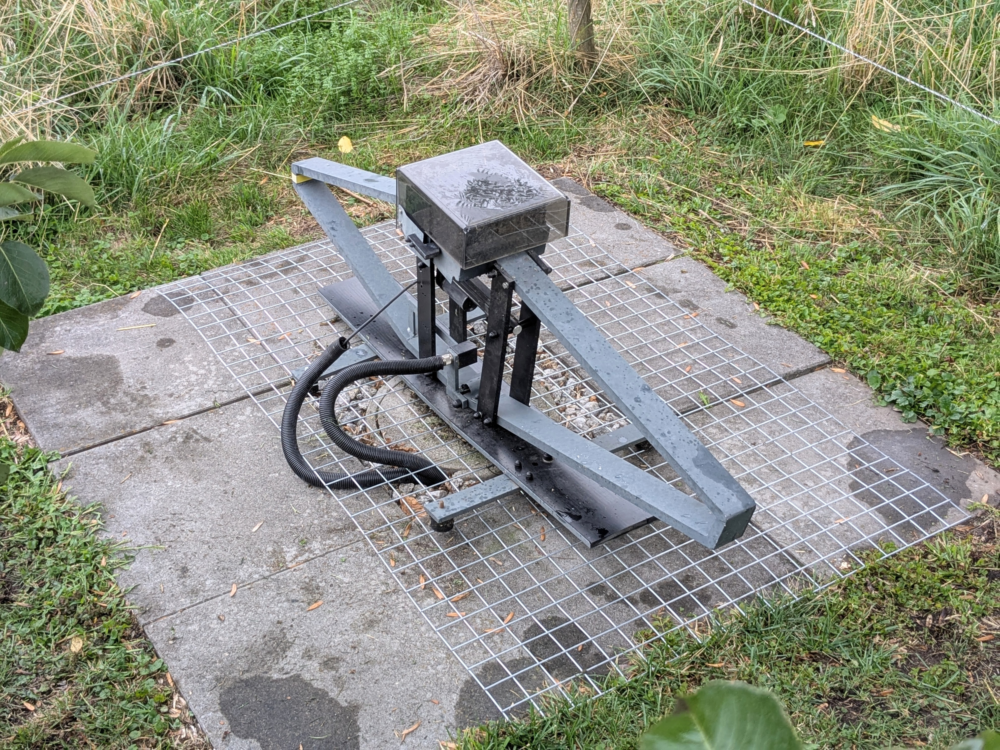
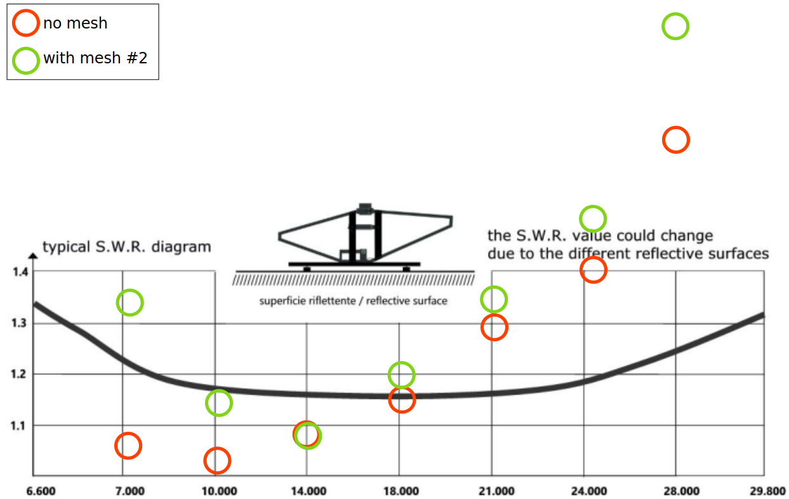
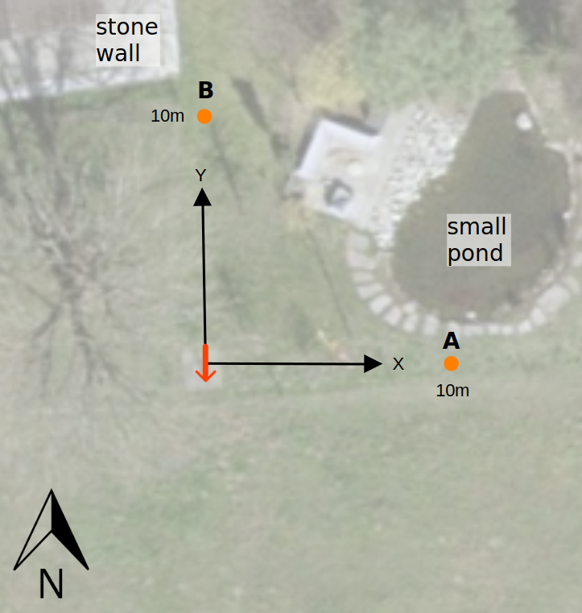

Info: Widely used antenna from the manufacturer Mazzoni, Italy.
Conductor: Aluminium rectangular tube, outside 60mm x 20mm, wall 2 mm, painted gray.
Capacitor: Air capacitor, aluminum, painted gray
Environment: In the garden on the ground on patio slabs.
Thanks: Many thanks to Dieter HE9DJB for the opportunity to measure his antenna, for the active support, and for the interesting conversations.
| Band | 40m | 40m #2 | 30m | 30m #2 | 20m | 20m #2 | 17m | 17m #2 | 15m | 15m #2 | 12m | 12m #2 | 10m | 10m #2 | |
| Frequency f | MHz | 7.103 | 7.101 | 10.127 | 10.129 | 14.168 | 14.168 | 18.116 | 18.113 | 21.235 | 21.213 | 24.911 | 24.957 | 28.850 | 28.814 |
| C/λ | 1 | 0.05 | 0.05 | 0.07 | 0.07 | 0.10 | 0.10 | 0.13 | 0.13 | 0.15 | 0.15 | 0.17 | 0.17 | 0.20 | 0.20 |
| Calculation accuracy | accurate | accurate | accurate | accurate | accurate | accurate | moderate | moderate | moderate | moderate | moderate | moderate | reduced | moderate | |
| Intrinsic bandwidth Bint | kHz | 18.4 | 20.9 | 36.2 | 34.5 | 62.5 | 61.8 | 121.0 | 107.5 | 181.5 | 159.4 | 257.2 | 233.0 | 376.3 | 371.4 |
| Source of Bint | S-Parameters | ||||||||||||||
| Loop diameter D | m | 0.662 | |||||||||||||
| Conductor diameter d | m | 0.051 | |||||||||||||
| Loop count n | 1 | 1 | |||||||||||||
| Inductance L | H | 1.10e-06 | |||||||||||||
| Capacitance C | pF | 457 | 457 | 225 | 225 | 115 | 115 | 70.2 | 70.2 | 51.1 | 51.2 | 37.1 | 37 | 27.7 | 27.7 |
| Unloaded Q0 | 1 | 386 | 339 | 280 | 293 | 227 | 229 | 150 | 169 | 117 | 133 | 97 | 107 | 77 | 78 |
| Damping resistance RT | Ohm | 0.127 | 0.145 | 0.250 | 0.239 | 0.432 | 0.427 | 0.836 | 0.743 | 1.254 | 1.101 | 1.777 | 1.609 | 2.599 | 2.566 |
| Radiation resistance RR | Ohm | 0.00116 | 0.00116 | 0.00481 | 0.00482 | 0.0185 | 0.0185 | 0.0496 | 0.0495 | 0.0939 | 0.0935 | 0.178 | 0.180 | 0.323 | 0.321 |
| Loss resistance RLoss | Ohm | 0.126 | 0.144 | 0.245 | 0.234 | 0.413 | 0.408 | 0.786 | 0.693 | 1.160 | 1.008 | 1.599 | 1.430 | 2.277 | 2.245 |
| Power to antenna Pfwd | W | 100 | 100 | 100 | 100 | 100 | 100 | 100 | 100 | 100 | 100 | 100 | 100 | 100 | 100 |
| swr_min_ant | 1 | 1.07 | 1.36 | 1.03 | 1.15 | 1.08 | 1.08 | 1.14 | 1.20 | 1.29 | 1.34 | 1.40 | 1.49 | 1.65 | 1.91 |
| etaSWR_ant | % | 99.9 | 97.7 | 100.0 | 99.5 | 99.9 | 99.8 | 99.6 | 99.2 | 98.4 | 97.9 | 97.2 | 96.1 | 94.0 | 90.3 |
| Power antenna load Pload | W | 100 | 98 | 100 | 100 | 100 | 100 | 100 | 99 | 98 | 98 | 97 | 96 | 94 | 90 |
| Antenna efficiency η | % | 0.915 | 0.785 | 1.93 | 2.01 | 4.28 | 4.33 | 5.90 | 6.62 | 7.37 | 8.31 | 9.77 | 10.7 | 11.7 | 11.3 |
| Loop current I rms | A | 28.04 | 25.99 | 20.00 | 20.42 | 15.21 | 15.30 | 10.91 | 11.56 | 8.86 | 9.43 | 7.40 | 7.73 | 6.01 | 5.93 |
| Loop voltage Uloop rms | V | 1376 | 1275 | 1399 | 1429 | 1489 | 1497 | 1366 | 1446 | 1300 | 1382 | 1273 | 1332 | 1198 | 1181 |
| Magnetic dipole moment m | A m² | 9.645 | 8.940 | 6.880 | 7.026 | 5.233 | 5.263 | 3.754 | 3.975 | 3.048 | 3.243 | 2.544 | 2.658 | 2.068 | 2.040 |
| Link to calculator | calculator | calculator | calculator | calculator | calculator | calculator | calculator | calculator | calculator | calculator | calculator | calculator | calculator | calculator | |



The datasheet recommends a reflective surface under the antenna.
It also states that SWR can be optimized by changing the distance from the reflective surface.
The antenna was first measured without a reflective surface. Afterwards, a metal mesh was placed under the antenna and the measurements were repeated. Measurements with the mesh are marked with #2.



For the measurement with the mesh, we did not tune the distance to the mesh. The SWR was good immediately, about as good as without the mesh.
The efficiency with and without the mesh does not differ significantly.
The reflective surface had no effect on efficiency, so the mesh is unnecessary. We removed it again after the test.
The antenna was measured from the shack, which is about 40 m away from the antenna.
The antenna was tuned with the ATU (Automatic Tuner Unit from Mazzoni).

The calibration of the VNA was done at the antenna feed point: green line.
Cable: 40m low loss 10mm Aircom Premium, 5m LMR195.
The cable attenuation alpha and the cable delay tau in the following table should therefore be small.
| File | model f0 MHz |
model Bint kHz |
model alpha db |
model_tau ns |
SWR_min_vna | SWR_min_ant | eta SWR |
|---|---|---|---|---|---|---|---|
| 20260916_1546_no_mesh__7p1MHz_VALUES.py | 7.103 | 18.4 | 0.000 | 4.84 | 1.07 | 1.07 | 0.999 |
| 20260916_1547_no_mesh__10p1MHz_VALUES.py | 10.127 | 36.2 | 0.000 | 3.63 | 1.03 | 1.03 | 1.000 |
| 20260916_1549_no_mesh__14p2MHz_VALUES.py | 14.168 | 62.5 | 0.001 | 3.11 | 1.08 | 1.08 | 0.999 |
| 20260916_1551_no_mesh__18p1MHz_VALUES.py | 18.116 | 121.0 | 0.000 | 3.23 | 1.14 | 1.14 | 0.996 |
| 20260916_1553_no_mesh__21p2MHz_VALUES.py | 21.235 | 181.5 | 0.002 | 3.20 | 1.29 | 1.29 | 0.984 |
| 20260916_1555_no_mesh__24p9MHz_VALUES.py | 24.911 | 257.2 | 0.001 | 2.87 | 1.40 | 1.40 | 0.972 |
| 20260916_1556_no_mesh__28p9MHz_VALUES.py | 28.850 | 376.3 | 0.000 | 2.99 | 1.65 | 1.65 | 0.940 |
| 20260916_1628_mesh_7p1MHz_VALUES.py | 7.101 | 20.9 | 0.000 | 1.57 | 1.36 | 1.36 | 0.977 |
| 20260916_1629_mesh_10p1MHz_VALUES.py | 10.129 | 34.5 | 0.000 | 4.28 | 1.15 | 1.15 | 0.995 |
| 20260916_1632_mesh_14p2MHz_VALUES.py | 14.168 | 61.8 | 0.007 | 3.31 | 1.08 | 1.08 | 0.998 |
| 20260916_1634_mesh_18p1MHz_VALUES.py | 18.113 | 107.5 | 0.000 | 3.51 | 1.20 | 1.20 | 0.992 |
| 20260916_1636_mesh_21p2MHz_VALUES.py | 21.213 | 159.4 | 0.000 | 3.19 | 1.34 | 1.34 | 0.979 |
| 20260916_1639_mesh_25p0MHz_VALUES.py | 24.957 | 233.0 | 0.000 | 3.22 | 1.49 | 1.49 | 0.961 |
| 20260916_1641_mesh_28p8MHz_VALUES.py | 28.814 | 371.4 | 0.000 | 2.99 | 1.91 | 1.91 | 0.903 |
The following diagrams: red points = measured values; green line = fitted model.
| Smith | SWR | Values | |||||||||||||||||||||
|---|---|---|---|---|---|---|---|---|---|---|---|---|---|---|---|---|---|---|---|---|---|---|---|
20260916_1546_no_mesh__7p1MHz |
20260916_1546_no_mesh__7p1MHz |
20260916_1546_no_mesh__7p1MHz
|
|||||||||||||||||||||
20260916_1547_no_mesh__10p1MHz |
20260916_1547_no_mesh__10p1MHz |
20260916_1547_no_mesh__10p1MHz
|
|||||||||||||||||||||
20260916_1549_no_mesh__14p2MHz |
20260916_1549_no_mesh__14p2MHz |
20260916_1549_no_mesh__14p2MHz
|
|||||||||||||||||||||
20260916_1551_no_mesh__18p1MHz |
20260916_1551_no_mesh__18p1MHz |
20260916_1551_no_mesh__18p1MHz
|
|||||||||||||||||||||
20260916_1553_no_mesh__21p2MHz |
20260916_1553_no_mesh__21p2MHz |
20260916_1553_no_mesh__21p2MHz
|
|||||||||||||||||||||
20260916_1555_no_mesh__24p9MHz |
20260916_1555_no_mesh__24p9MHz |
20260916_1555_no_mesh__24p9MHz
|
|||||||||||||||||||||
20260916_1556_no_mesh__28p9MHz |
20260916_1556_no_mesh__28p9MHz |
20260916_1556_no_mesh__28p9MHz
|
|||||||||||||||||||||
20260916_1628_mesh_7p1MHz |
20260916_1628_mesh_7p1MHz |
20260916_1628_mesh_7p1MHz
|
|||||||||||||||||||||
20260916_1629_mesh_10p1MHz |
20260916_1629_mesh_10p1MHz |
20260916_1629_mesh_10p1MHz
|
|||||||||||||||||||||
20260916_1632_mesh_14p2MHz |
20260916_1632_mesh_14p2MHz |
20260916_1632_mesh_14p2MHz
|
|||||||||||||||||||||
20260916_1634_mesh_18p1MHz |
20260916_1634_mesh_18p1MHz |
20260916_1634_mesh_18p1MHz
|
|||||||||||||||||||||
20260916_1636_mesh_21p2MHz |
20260916_1636_mesh_21p2MHz |
20260916_1636_mesh_21p2MHz
|
|||||||||||||||||||||
20260916_1639_mesh_25p0MHz |
20260916_1639_mesh_25p0MHz |
20260916_1639_mesh_25p0MHz
|
|||||||||||||||||||||
20260916_1641_mesh_28p8MHz |
20260916_1641_mesh_28p8MHz |
20260916_1641_mesh_28p8MHz
|
The main loop inductance is an important parameter because it directly affects the antenna efficiency calculation.
The inductance can be estimated from geometry (L). In general, an additional measurement is used as a cross-check, especially for non-circular loops where the geometric estimate is more difficult.
The resonance frequency of the LC circuit depends on L and C. Additional known capacitors are connected in parallel with the existing capacitor, and the new resonance frequency is measured.

| fNIX | 14.176310 | MHz | Resonance frequency with no additional capacitors connected. |
| fOFF | 14.077398 | MHz | Capacitors and switches are physically connected at the antenna capacitor. A small parasitic capacitance from wiring and switches lowers the resonance frequency. |
| f100 | 9.808864 | MHz | Resonance frequency with an additional 100 pF capacitor switched in. |
| f560 | 5.106150 | MHz | Resonance frequency with an additional 560 pF capacitor switched in. |
| C100 | 100.0 | pF | Additional capacitance used for the 100 pF branch. |
| C560 | 579.0 | pF | Additional capacitance used for the 560 pF branch. |
| L | 1.099e-06 | H | Calculated from geometry of the main loop. |
| L100 | 1.355e-06 | H | Derived from the resonance frequencies fOFF and f100 deviation +23% vs L |
| L560 | 1.457e-06 | H | Derived from the resonance frequencies fOFF and f560 deviation +33% vs L |
| CNIX | 1.312e-12 | As/V | Derived from using L100, fOFF, and fNIX estimated parasitic capacitance of switches and wiring; expected value 1 ... 5 pF |
The maximum deviation between L and the capacitor-based L1x values is +33%. The deviation is quite large. The geometry of the Stealth is unusual. There are places, for example the spring at the bottom, where the conductor cross-section is relatively small. This could explain the inductance deviation.
The uncertainty in the inductance also leads to uncertainty in the efficiency. The efficiencies calculated on this page must therefore be treated with appropriate caution.
L is used for the calculations of the antenna efficiency.
The H-field can be calculated under free-space conditions. In practice, however, the building contains numerous conductive objects that distort the field. To quantify the extent of this distortion, the H-field was measured and compared with the theoretical predictions.
The H-field is measured with a small measurement loop. The measuring setup is described in https://arxiv.org/abs/2607.10828.

| tx_power_w | 100.0 |
| f_Hz | 7023000 |
| attenuation_cables_connectors_total_dbm | 0.85 dB |
| tx_after_cable_w | 82.1 |
| I_main_loop_A | 23.6 |
| magnetic dipole moment m (Am2) | 8.1 |
| X | Y | Z | expected | measured | factor | |
|---|---|---|---|---|---|---|
| m | m | m | A/m | A/m | ||
| A | 10.0 | 0.0 | 1.7 | 0.0022 | 0.0047 | 2.138 |
| B | 0.0 | 10.0 | 2.1 | 0.0012 | 0.0095 | 7.995 |
| tx_power_w | 10.0 |
| f_Hz | 14055000 |
| attenuation_cables_connectors_total_dbm | 1.09 dB |
| tx_after_cable_w | 7.8 |
| I_main_loop_A | 4.2 |
| magnetic dipole moment m (Am2) | 1.5 |
| X | Y | Z | expected | measured | factor | |
|---|---|---|---|---|---|---|
| m | m | m | A/m | A/m | ||
| A | 10.0 | 0.0 | 1.7 | 0.0007 | 0.0026 | 3.684 |
| B | 0.0 | 10.0 | 2.1 | 0.0009 | 0.0036 | 3.851 |
| tx_power_w | 10.0 |
| f_Hz | 28050000 |
| attenuation_cables_connectors_total_dbm | 1.42 dB |
| tx_after_cable_w | 7.2 |
| I_main_loop_A | 1.6 |
| magnetic dipole moment m (Am2) | 0.5 |
| X | Y | Z | expected | measured | factor | |
|---|---|---|---|---|---|---|
| m | m | m | A/m | A/m | ||
| A | 10.0 | 0.0 | 1.7 | 0.0006 | 0.0023 | 4.182 |
| B | 0.0 | 10.0 | 2.1 | 0.0015 | 0.0033 | 2.281 |
The measured field does not correspond to the expected field under free-space conditions.
The direction of the field lines was in some cases completely different from what would be expected based on the geometry.
There are no known iron structures in the immediate vicinity. There is no plausible explanation for the large deviation.
The antenna had failed after 2 years in the weather and had to be repaired first.
The contact in the stainless-steel joint over the moving part was so poor that the ATU could no longer tune the antenna.
The aluminum loop was under stress against the side plastic plates. All plastic parts were warped.
It is worth taking precautions against corrosion. For details, see www.positron.ch/rf/2026_mazzoni_stealth
The antenna has a reasonable SWR across the full frequency range.
The measured bandwidths do not match the bandwidths specified in the datasheet.
The calculated efficiency is not outstanding. Given the size of the build and its proximity to the ground, it is acceptable.
I strongly suspect that a larger distance from the ground would increase the efficiency significantly.
The antenna is difficult for laypeople to recognize as an antenna and lives up to its name.
It is the dream of every antenna to be allowed to stand in such a beautiful environment.
Overview of all Antennas with filter/selection: compare page
Overview of all Antennas static: static compare page
2026 Peter Märki (HB9ISP). This project is created in my free time and has no commercial background. Provided without warranty of any kind. Feedback is welcome.